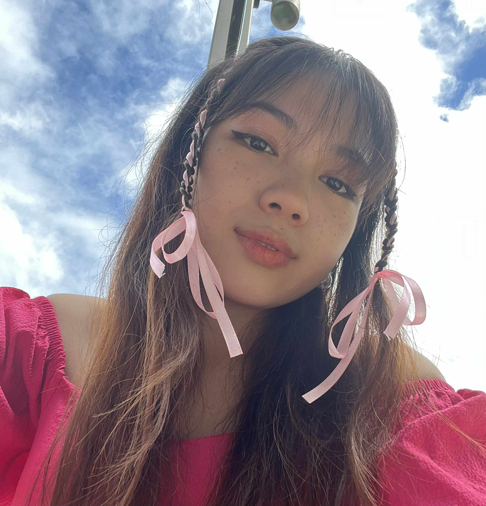
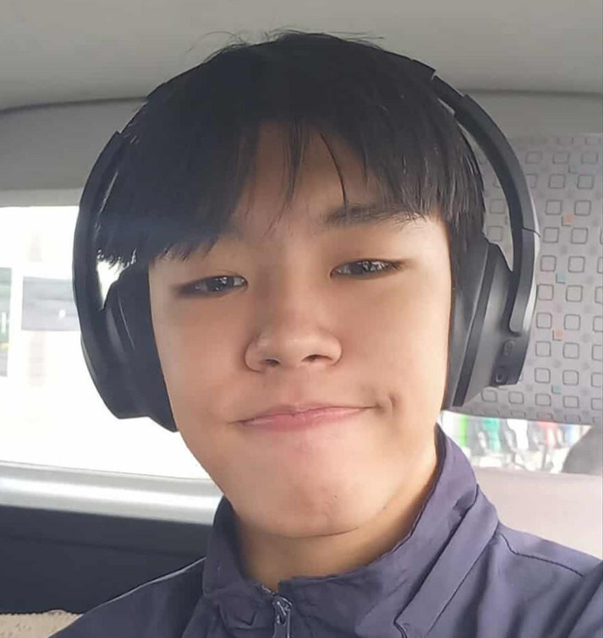

Yeorobun, everyone! It's us, the cutie web developers of the year! ♡

Czarina Pascua ૮₍´˶• . • ⑅ ₎ა
Czarina Pascua, a.k.a. "Maningning", is a girl who loves SEVENTEEN — a boy group she fell in love with not just because of their looks, but because of
their personalities that set her standards so high and their music that gives her comfort — a solace. Her ultimate bias in the group is Jeonghan,
the man whom she always finds familiar — as if he were her husband from a past life. She finally saw SEVENTEEN last January 2025 at the Philippine Sports Stadium, a dream
she kept wishing for that finally came true. Yep, she had the best three hours of her life — indeed an aju nice night . She couldn't get over it for five months straight and had a PCD. Watching her fancams she filmed that night is the only therapy to keep her sane. She didn't ask her parents for that concert ticket
and other merchandise she bought because she is a visual artist who's accepting offers and commissions that pay for her effort, time, and
love she puts into her handicrafts.

Ace Feir ₍^. .^₎Ⳋ
Ace Sebastian Feir, no nicknames. A guy that's often lazy but still puts in the work. He loves his friends dearly and has a passion for self improvement.
Hobbies include working out in the gym, hanging out with friends, and doom scrolling on TikTok. He also loves cats and getting his whole 8 hours of sleep every night.
He doesn't know anything about Seventeen and his usual taste in music are rock, metal, and indie pop...
John Anthony Oriza ദ്ദി ˉ͈̀꒳ˉ͈́ )✧
John Anthony Oriza, a.k.a. “JA”, is a hardworking dude with an above-average IQ who insists on putting way too much effort into everything he does. He’s a digital artist, a gym rat, and an otaku basically someone who can both lift weights and binge anime with equal dedication.
He jams to musicals mostly but he does listens to most songs. Despite dealing with surface dyslexia and family trauma, he still manages to smile like life is just a side quest.
His favorite hobbies include hanging out with his closest friends whether they're button-mashing through video games, crying over anime, or going out to pretend like they are actually socializing like normal people.
Mike Laurence Marquez 𒌐
Mike Laurence Marquez, a.k.a Kenny, is a bass guitarist and a badminton player who loves listening to 2NE1 — a South Korean girl group formed by YG Entertainment in 2009. He is also a big fan of American rock band My Chemical Romance and loves listening to their music as well such as "Disenchanted", "Cancer", and "I Don't Love You". Their music is one of the reasons he continues to pursue his passion for music and helps him face challenges in life.